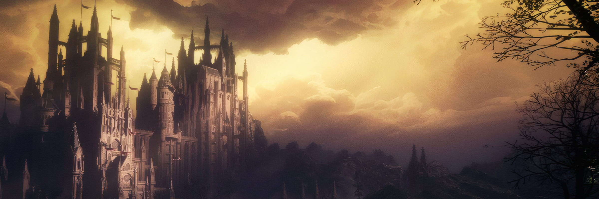
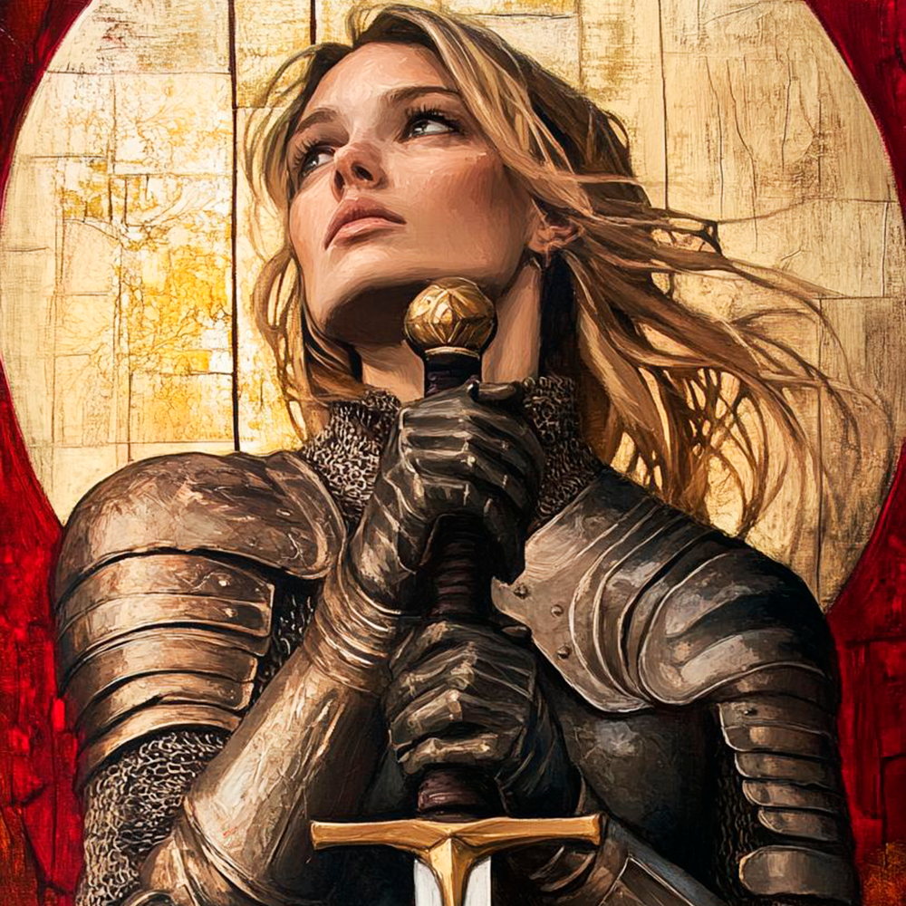
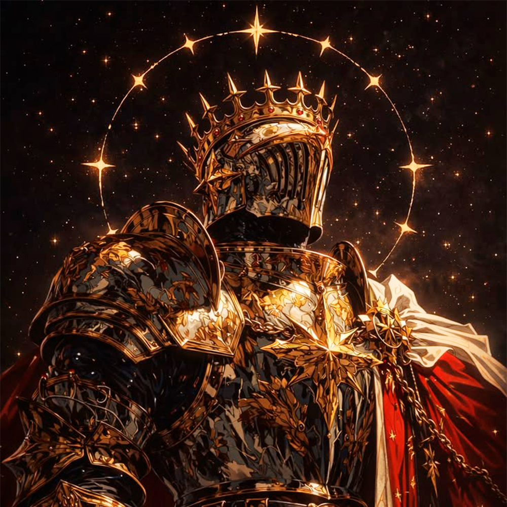
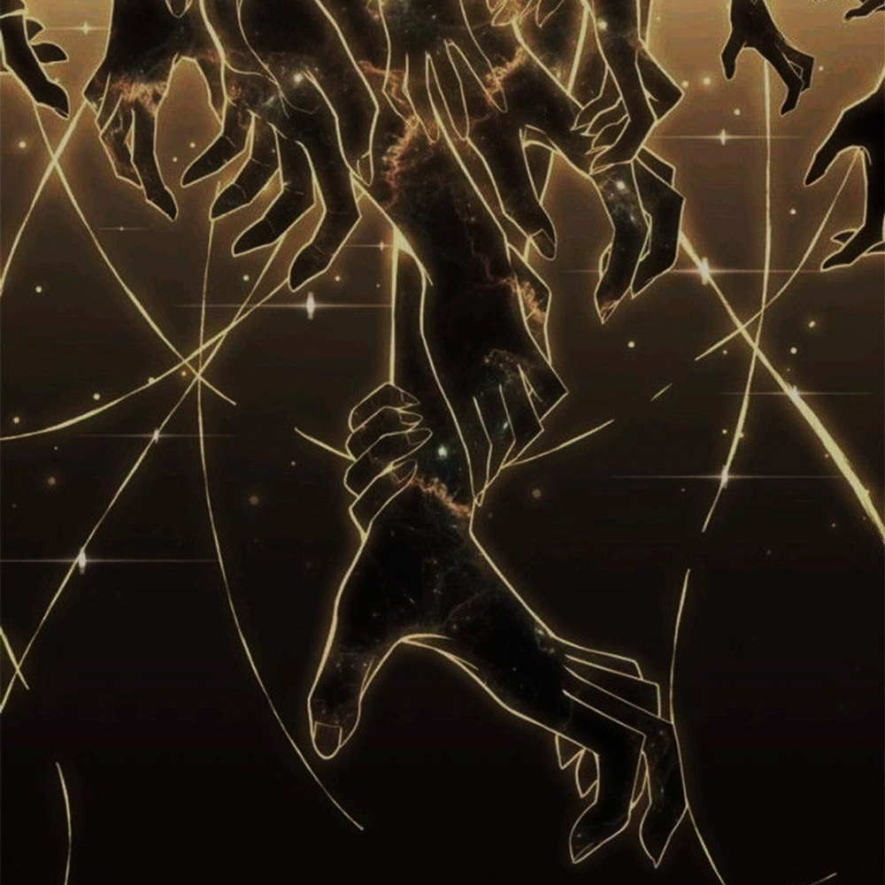
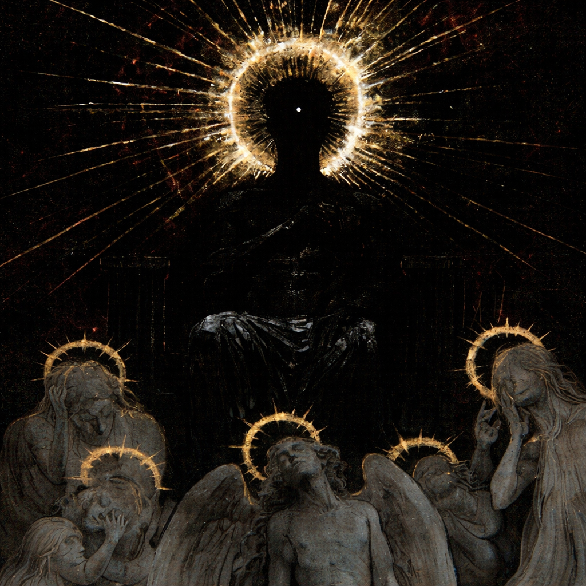
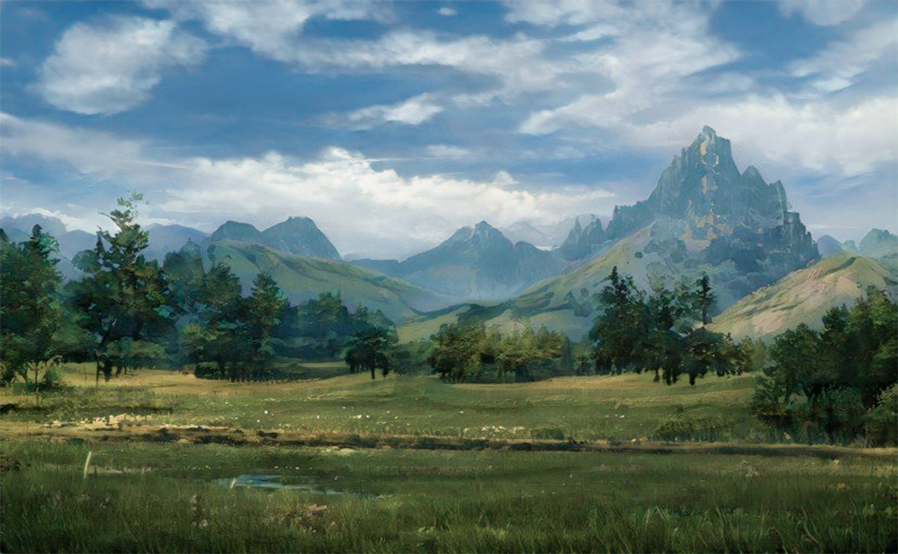
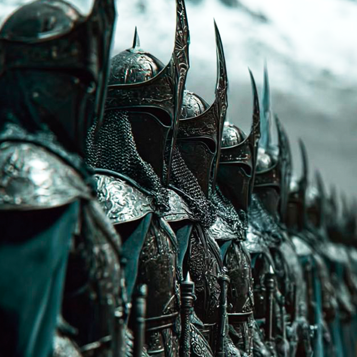
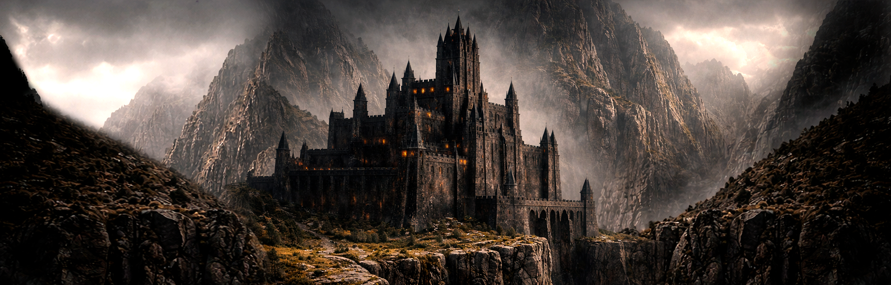
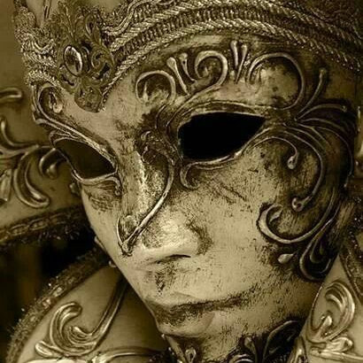

Os Escolhidos, no início da Grande Guerra, foram vistos não apenas como a elite mortal de Valthric - mas como uma bênção. O toque divino em nossa terra. Mas esses dias ficaram para trás...
A verdade é que aquilo que um dia nos vigiava por nós, tornou-se aquilo que nos vigia contra nós. O que antes protegia, agora observa. Um instrumento claro de coerção divina - uma tentativa patética de exercer domínio sobre nós, mortais
Um Escolhido não tem escolha. Quando escolhido, é sua obrigação servir a vontade divina.
Antes, um título disputado.
Hoje? Uma obrigação temida...


Klaus teria vergonha do que esse título se tornou - onde antes matar anjo era LEI, hoje não passa boato...

Não foi uma batalha
Foi quando perceberam que não estavam no controle do que haviam criado
Algo se quebrou
Desde então… algo permanece
Sempre à espreita


Antigamente um reino que cuidava da trama - hoje, busca apenas poder através dela

O exército de Aelindor nunca foi formado por magos
Enquanto estes permanecem como uma elite distante… é a linha de frente que sustenta o reino
Foram eles, por gerações, os verdadeiros protetores de Aelindor
Não pela glória...
Mas pelo dever.
E agora o dever chama novamente
desta vez, contra algo que não deveria existir

O reino onde a máscara mostra sua verdadeira identidade

Em Astória, o trono mudou de mãos...
Mas não de forma silenciosa.
Desde então, decisões que antes afetavam apenas a corte agora ecoam além de suas muralhas.
Há quem diga que o novo rei governa com firmeza.
Outros… evitam dizer qualquer coisa.
E entre os Vermelhos...
há uma casa que já não responde como antes.
Essa mudança no trono não ficou contida em Astória.
Mesmo em Aelindor...
seus efeitos já são sentidos.